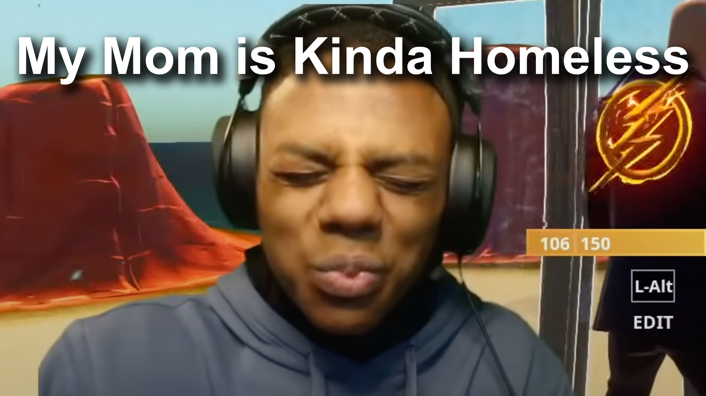

originoffamousmemes.ohio.skibidi
Early Stream the grand stream
Bem vindo a este site que falará da icónica fala " Pls Speed I need this my mom is kinda homeless"

Fig 1: Iconic Speed´s face of Speed trying not to laugh
Este momento tão famoso ocorreu durante uma live em dezembro de 2021 onde um seguidor de IShowSpeed dissse "Pls Speed I need this, my mom is kinda homeless".
Após ouvir tais palavras Speed fez a cara retratada na Fig 1 em luto pela mãe do seguidor